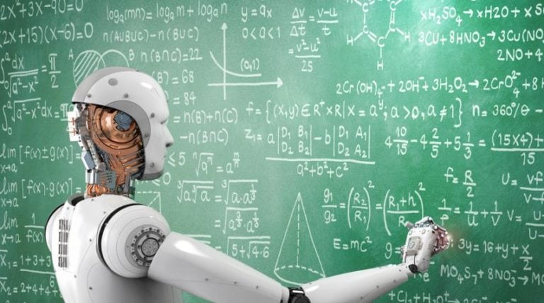
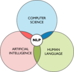

Applicationog of Artificial Intelligance
links:
Applicationog of Artificial Intelligance
Speech Recognition
Speech Recognition is used to convert and transform human speech into a useful and comprehensive format for computer applications to process. The transcription and transformation of human language into useful formats is witnessed often nowadays and is growing rapidly. Companies like NICE, Nuance Communications, OpenText and Verint Systems offer speech recognition services.
Link :
Speech Recognition
Machine Learning Platforms
Machine Learning is a sub discipline of computer science as well as an important branch of Artificial Intelligence. Its objective is to develop new techniques enabling computers to learn and hence become more intelligent. With the help of algorithms, APIs (application programming interface), development, training tools, big data and applications, machine learning platforms are becoming more popular. They are widely used for the purpose of categorization and prediction. Amazon, Fractal Analytics, Google, H2O AI, Microsoft, SAS, Skytree and Adtext are some of the companies selling machine learning platforms.
Link :
Machine Learning

Virtual Agents
A virtual agent refers to a computer agent or a program that is capable of interacting effectively with humans. Trending on charts top 15 hot artificial intelligence technologies, currently, it is used in customer service through Chat bots as well as a smart home manager. Companies that provide virtual agents are Apple, Google, Amazon, Artificial Solutions, Assist AI, Creative Virtual, IBM, IPsoft, Microsoft and Satisfi.
Decision Management
Artificially Intelligent machines have the capability of introducing logic to AI systems in order to gear them up to be used for training, maintenance and tuning. In order to add value to the business and profitable, decision management is already being used by organizations by incorporating it into their applications to propel and execute automated decision. Some companies that provide this service are Informatica, Advanced Systems Concepts, Maana, Pegasystems and UiPath.
AI Optimized Hardware
Owing to better and improved graphics as well as central processing units, devices are being structured and used to execute AI oriented tasks specifically. A prominent example of this is the AI optimized silicon chip which can be inserted into any portable device. Therefore, companies and organizations are investing greatly in AI to accelerate the next generation of applications. This technological service is offered by companies like Alluviate, Google, Cray, Intel, IB and Nvidia.
Deep Learning Platforms
Deep Learning Platforms is a form of machine Learning that duplicates the neural circuits of the human brain to process data and create patterns for decision making. In this unique technology, algorithms use artificial neural networks. A few of its applications are automated speech recognition, image recognition and prediction of anything that can be sensed in the digital sphere. Deep learning platform providers are Deep Instinct, Ersatz Labs, Fluid AI, MathWorks, Peltarion, Saffron Technology, Sentient Technologies and Leverton.
So we have it halfway in this Top 15 Top Artificial Intelligence Technologies article, let us see some more tools.
Robotic Process Automation
Robotic Process Automation refers to the functioning of corporate processes due to the mimicking human tasks and automate them. In this particular sphere, it is important to bear in mind that AI is not meant to replace humans, but to support and complement their skills and talent. Companies like Pega systems, Automation Anywhere, Blue Prism, UiPath and WorkFusion focus on this process.

Link :
robotic-process-automation/
Text Analytics and Natural Language Processing (NLP)
Natural Language Processing focuses on the interactions between human languages and computers. It uses text analytics to analyse the structure of sentences as well as their interpretation and intention through machine learning. This technology is widely adopted in fraud detection and for security systems. Many automated assistants and applications derive unstructured data by NLP. Basis Technology, Expert System, Coveo, Indico, Knime, Lexalytics, Linguamatics, Mindbreeze, Sinequa, Stratifyd and Synapsify are some of the service providers. No wonder these terms make it to the top 15 hot artificial intelligence technologies list.

Bio-metrics
Bioetrics deals with the recognition, measurement and analysis of the physical features of the body’s structure, form and human behavior. It fosters organic interactions between machines and humans as it works with touch, image, speech and body language. It is predominantly used for the purpose of market research. #VR, Affectiva, Agnitio, FaceFirst, Sensory, Synqera and Tahzoo provide this technology service.
Cyber Defense
Cyber defense is a computer defense mechanism that aims to detect, prevent and mitigate attacks and threats to data and infrastructure of systems. Neural networks that are capable of processing sequences of inputs can be put to use along with machine learning techniques to create learning technologies in order to reveal suspicious user activity and detect cyber threats.
Content Creation
Although content is created by people working on videos, ads, blogs and white papers; brands like Hearst, USA Today ad CBS are using AI to generate content. Wordsmith is a popular tool created by Automated Insights, which applies NLP in order to generate news stories.
Emotion Recognition
This kind of AI technology enables emotions expressed by humans to be read and interpreted using advanced image processing or audio data processing. Law enforcers often use thus technology during interrogation. Some companies who use emotion recognition are Beyond Verbal, nViso and Affectiva.
Image Recognition
Image recognition refers to the process of identifying and detecting a feature in a video or an image. It can help the process of image searches greatly as well as detect license plates, diagnose diseases and study personalities. Clarifai, SenseTime and GuGum’s provide this technology service.
Marketing Automation
Marketing and sales teams and divisions have adopted AI and benefited a lot from it in return. Methods incorporating AI through automated customer segmentation, customer data integration and campaign management are widely used. AdextAI has grown to become a pioneer in adopting marketing automation.
So this it guys, this brings us to the end of this article. I hope you liked this Top 15 hot Artificial Technologies article gave you something new to learn.
You may also checkout this AI and Deep Learning with TensorFlow Course which is curated by industry professionals as per the industry requirements & demands. You will master the concepts such as SoftMax function, Autoencoder Neural Networks, Restricted Boltzmann Machine (RBM) and work with libraries like Keras & TFLearn. The course has been specially curated by industry experts with real-time case studies.